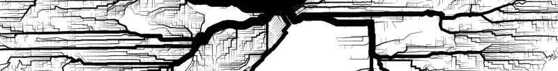

Graphserver
The open-source multi-modal trip planner.
Download
$ svn co http://graphserver.svn.sourceforge.net/svnroot/graphserver/tags/072808 graphserver
Or, for the stout of heart, get a copy of the current working branch
$ svn co http://graphserver.svn.sourceforge.net/svnroot/graphserver/trunk graphserver
Install
Install core libraries
$ cd graphserver
$ cd core
$ make
$ sudo make install
$ cd ..
Install Python wrappers
$ cd pygs
$ sudo python setup.py install
$ cd ..
There are also a set of Ruby wrappers
$ cd rbgs
$ ruby extconf.rb
$ make
There is presently no installer for the ruby wrappers
Using Graphserver via Python Wrappers
A Quick Tour of the Basics
$ python
>>> from graphserver.core import Graph, Street, State
>>> gg = Graph()
>>> gg.add_vertex("A")
<graphserver.core.Vertex object at 0xb7d9608c>
>>> gg.add_vertex("B")
<graphserver.core.Vertex object at 0xb7c397cc>
>>> gg.add_edge( "A", "B", Street("1", 100) )
<graphserver.core.Edge object at 0xb7c4a92c>
>>> gg.add_edge( "A", "B", Street("2", 50 ) )
<graphserver.core.Edge object at 0xb7da708c>
>>> gg.size #the graph is quite small
2
>>> gg.get_vertex("A").outgoing
[<graphserver.core.Edge object at 0xb7b9accc>, <graphserver.core.Edge object at 0xb7b9acac>]
>>> gg.get_vertex("A").incoming
[]
>>> spt = gg.shortest_path_tree( "A", "B", State(1,0) )
>>> spt
<graphserver.core.ShortestPathTree object at 0xb7c45b8c>
>>> spt.get_vertex("A")
<graphserver.core.Vertex object at 0xb7c4a92c>
>>> spt.get_vertex("A").outgoing
[<graphserver.core.Edge object at 0xb7b9adec>]
>>> vertices, edges = spt.path("B")
>>> vertices
[<graphserver.core.Vertex object at 0xb7b9ae4c>, <graphserver.core.Vertex object at 0xb7b9adec>]
>>> edges
[<graphserver.core.Edge object at 0xb7b9accc>]
>>> edges[0].payload
<graphserver.core.Street object at 0xb7b9ad8c>
>>> edges[0].payload.name
'2'
>>> vertices[-1].payload
<graphserver.core.State object at 0xb7c4a92c>
>>> vertices[-1].payload.time
58
>>> spt.destroy()
>>> gg.destroy()
>>> exit()
Loading OpenStreetMap Data
$ cd /path/to/graphserver/pygs/examples/osm
$ python
>>> from graphserver.ext.osm import OSM
>>> osm = OSM("sf.osm")
>>> len(osm.nodes)
39406
>>> from graphserver.core import Graph
>>> from graphserver.ext.osm import OSMLoadable
>>> from pyproj import Proj
>>> class OSMGraph(Graph, OSMLoadable):
... pass
...
>>> gg = OSMGraph()
>>> gg.load_osm(osm, Proj(init='epsg:26910'))
>>> gg.size
39406
>>> fortmason = "osm65298435"
>>> hollypark = "osm65297473"
>>> spt=gg.shortest_path_tree(fortmason,hollypark,State(1,0))
>>> vertices, edges = spt.path(hollypark)
>>> len(vertices), len(edges)
(97, 96)
>>> edges[0].payload.name
'8920043-48'
>>> vertices[-1].payload.time
9192
>>> spt.destroy()
>>> gg.destroy()
>>> quit()
Converting the raw IDs returned by Graphserver into a human-readable message is left as an exercise to the reader.
Loading Public Transit Data
Graphserver has built-in edge types to handle schedule public transit. Public transit data is loaded into the graph using files formatted according to the
Google Transit Feed Specification (GTFS).
Several transit agencies publicly release schedule data in the GTFS format.
$ mkdir bart
$ cd bart
$ wget http://www.bart.gov/schedules/developers/latest_open.aspx
$ unzip google_transit.zip
$ cd ..
$ python
>>> from graphserver.core import Graph, Link
>>> from graphserver.ext.gtfs import GTFSLoadable
>>> class GTFSGraph(Graph, GTFSLoadable):
... pass
...
>>> gg = GTFSGraph()
>>> gg.load_gtfs( './bart' )
>>> [v.label for v in gg.vertices]
['gtfsROCK', 'gtfsBALB', 'gtfsDELN', 'gtfsSANL', 'gtfsPLZA', 'gtfsLAFY', 'gtfs16TH', 'gtfsCAST', 'gtfs
24TH', 'gtfs12TH', 'gtfsNBRK', 'gtfsDUBL', 'gtfsDALY', 'gtfsMCAR', 'gtfsORIN', 'gtfsFRMT', 'gtfsSHAY',
'gtfsDBRK', 'gtfsSFIA', 'gtfsCONC', 'gtfsMONT', 'gtfsNCON', 'gtfsASBY', 'gtfsPHIL', 'gtfsBAYF', 'gtfsP
ITT', 'gtfsOAK', 'gtfsLAKE', 'gtfsHAYW', 'gtfsRICH', 'gtfsMLBR', 'gtfsUCTY', 'gtfsSBRN', 'gtfs12TH_N',
'gtfsGLEN', 'gtfsMCAR_S', 'gtfsSSAN', 'gtfsWOAK', 'gtfsCIVC', 'gtfs19TH', 'gtfsFTVL', 'gtfsWCRK', 'gtf
sCOLM', 'gtfsPOWL', 'gtfsCOLS', 'gtfsEMBR']
>>> gg.add_edge("gtfs12TH", "gtfs12TH_N", Link())
<graphserver.core.Edge object at 0x85dee6c>
>>> gg.add_edge("gtfs12TH_N", "gtfs12TH", Link())
<graphserver.core.Edge object at 0x85dedcc>
>>> gg.add_edge("gtfsMCAR", "gtfsMCAR_S", Link())
<graphserver.core.Edge object at 0x85ded0c>
>>> gg.add_edge("gtfsMCAR_S", "gtfsMCAR", Link())
<graphserver.core.Edge object at 0x85dee6c>
>>> twothirtysix = 1217367385
>>> spt = gg.shortest_path_tree( "gtfsCIVC", "gtfsPITT", State(1,twothirtysix))
>>> spt.get_vertex("gtfsCIVC").outgoing
[<graphserver.core.Edge object at 0x85decac>, <graphserver.core.Edge object at 0x85de1ec>]
>>> spt.get_vertex("gtfsPITT").incoming
[<graphserver.core.Edge object at 0x85de1cc>]
>>> vertices, edges = spt.path("gtfsPITT")
>>> [v.label for v in vertices]
['gtfsCIVC', 'gtfsPOWL', 'gtfsMONT', 'gtfsEMBR', 'gtfsWOAK', 'gtfs12TH', 'gtfs19TH', 'gtfsMCAR', 'gtfsR
OCK', 'gtfsORIN', 'gtfsLAFY', 'gtfsWCRK', 'gtfsPHIL', 'gtfsCONC', 'gtfsNCON', 'gtfsPITT']
>>> [e.payload.arrive for e in edges]
[52980, 53100, 53220, 53640, 54120, 54180, 54420, 54900, 55200, 55500, 55740, 55920, 56220, 56460, 56820]
>>> spt.destroy()
>>> gg.destroy()
>>> quit()
Intermingling Public Transit and Street Data
Unlike the above working examples, this is more of an illustrative outline.
$ python
>>> from graphserver.core import Graph
>>> from graphserver.ext.osm import OSMLoadable
>>> from graphserver.ext.gtfs import GTFSLoadable
>>> class MultimodalGraph(Graph, OSMLoadable, GTFSLoadable):
... pass
...
>>> gg = MultimodalGraph()
>>> gg.load_osm( "./path/to/osm.osm" )
>>> gg.load_gtfs( "./path/to/gtfsdir" )
>>> gg.add_edge( "aBusStopLabel", "aStreetIntersectionLabel", Link() )
>>> gg.add_egge( "aStreetIntersectionLabel, "aBusStopLabel", Link() )
>>> spt = gg.shortest_path_tree( "someStreetLabel", "otherStreetLabel", State(1, unixtime) )
>>> vertices, edges = spt.path( "otherStreetLabel" )
>>>
>>> spt.destroy()
>>> gg.destroy()